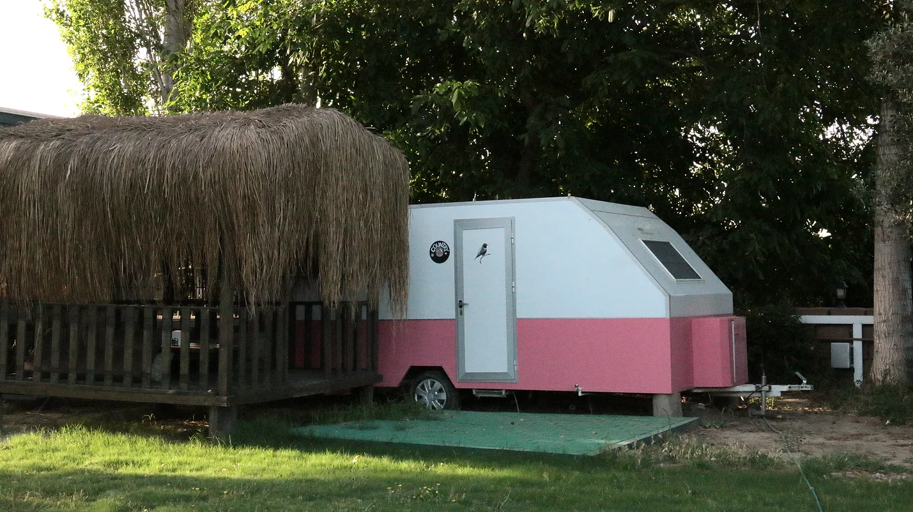

FİYATLAR
COUNTRY KARAVAN
Amerikan,Fransız ve İngiliz kır evlerinin genel dekorasyon tarzına verilen isimdir "Country". Minimal çiçekli desenleri,sade ve huzur veren havasıyla İngiliz Country tarzında dekore edildi.
İÇİNDEKİLER
- El ve banyo havlusu
- Şampuan ve sıvı sabun
- Ani su ısıtıcı( banyo için)
- Konvektör ısıtıcı (Sonbahar-Kış sezonu)
- Minibar
- İkram kahve,şeker
- Türk kahvesi makinası
- Türk kahvesi fincanı
- Yorgan,polar battaniye,şal
- Saç kurutma mak
- Vantilatör ( Yaz sezonu)
ÖZELLİKLERİ
- Model: 2017 Otel Tipi Çekme Karavan
- Uzunluk: 5,25 m
- Genişlik: 2,20 m
- Yükseklik: 2,10 m
- Veranda platformu: 6 m2
- İç ve Dış aydınlatma
- Kameriye şerit led aydınlatması
- Karavan dışındaki renkli çingene lambaları
- Pencere sinekliği
- Sunroof
- Özel kameriye
- Tuvalet ve banyo